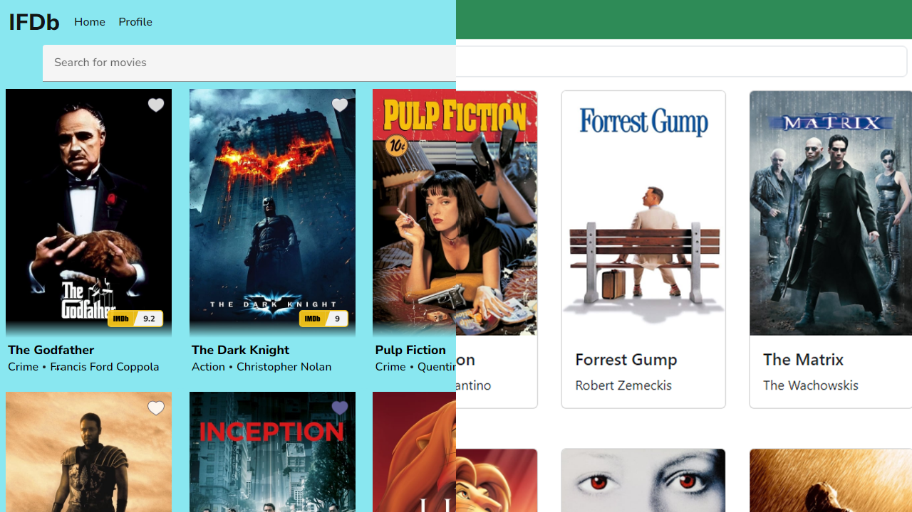

IFDb
Case Study
Overview
IFDb is a comprehensive movie database web application designed for movie enthusiasts who want to access and save information about their favorite films. The project encompasses both front-end and back-end development, leveraging modern technologies to deliver a seamless user experience. With a focus on usability, security, and functionality, IFDb aims to provide users with a platform to explore, discover, and manage their movie preferences efficiently.
Fig 1. Main movie view for Angular/React clients
Purpose and Objective
The primary objective of IFDb is to create a user-friendly platform for movie enthusiasts to access and organize information about movies. By leveraging two robust tech stacks and implementing essential features such as user registration, authentication, and database management, the project aims to provide a comprehensive solution for users to explore and interact with movie data seamlessly.
Tech Stack / Tools
IFDb utilizes the MERN (MongoDB, Express.js, React, Node.js) and MEAN (MongoDB, Express.js, Angular, Node.js) tech stacks for its development, showcasing a combination of front-end and back-end technologies. The back-end is built using Node.js, Express, and MongoDB, facilitating the creation of a RESTful API for seamless communication between the server and client-side applications. Key tools and technologies include:
- MongoDB: A NoSQL database used for storing data securely, providing scalability and flexibility.
- Express.js: A web application framework for Node.js, providing robust features for handling HTTP requests, routing, middleware, etc.
- Angular: A front-end framework developed by Google for building dynamic web applications using TypeScript, offering a comprehensive set of tools and features for efficient development and maintenance.
- React: A JavaScript library developed by Facebook for building user interfaces, allowing developers to create interactive UI components with ease and efficiency through a component-based architecture.
- Node.js: An open-source, server-side JavaScript runtime environment enabling the execution of JavaScript code outside the browser.
- Passport: Middleware used for implementing authentication strategies, ensuring secure user authentication.
- Swagger.js: Tool for generating interactive API documentation using the OpenAPI Specification, facilitating clear documentation of API endpoints.


Approach
Back-end
The back-end development of IFDb focuses on building a secure and efficient REST API to handle user authentication, data management, and interaction with the MongoDB database. Key aspects of the back-end development process include:
- Utilizing Node.js and Express.js to create the server-side application, defining API endpoints for user registration, login, movie, and data manipulation.
- Implementing basic HTTP authentication for logging in, and then JWT authentication for authorizing users with the functions of the app, utilizing Passport middleware for authentication strategies.
- Integrating Mongoose to define database models and interact with MongoDB, ensuring seamless integration of business logic into the API methods.
- Ensuring data security by hashing user passwords and implementing data validation to prevent errors.
- Deploying the back-end to the remote PaaS provider Heroku for accessibility and scalability.
Fig 2. API endpoints in backend
Front-end
The front-end development of IFDb encompasses two distinct client-side implementations, utilizing both React and Angular frameworks to show skills in using both frameworks and offer users varied experiences while interacting with the platform.
React version
In the React version of IFDb, the focus lies on building a responsive and interactive user interface using React, a popular JavaScript library for building user interfaces. Key aspects of the front-end development process include:
- Build a single-page application (SPA), structuring the project according to industry standards.
- Leveraging JSX for writing HTML-like markup inside JS files, utilizing React hooks for interacting with components.
- Utilizing React Bootstrap for designing forms and applying authentication logic and real-time form validation.
- Utilizing external libraries such as Moment.js for handling date and time manipulation, bcrypt for comparing password hashes, and FontAwesome for implementing and styling icons.

Fig 3. User profile view in React client
Angular version
In addition to the React version, IFDb also features an Angular implementation, offering users an alternative client-side experience. Key aspects of the Angular front-end development process include:
- Leveraging Angular's robust framework for building dynamic web applications with a focus on scalability and maintainability.
- Utilizing Angular's component-based architecture and TypeScript support for enhanced code organization and type safety.
- Implementing Angular forms for user input validation and authentication processes, ensuring a seamless user experience.
- Incorporating Angular Material for designing UI components and facilitating consistent design patterns across the application.
- Leveraging Angular's powerful dependency injection system for efficient management of application-wide services and dependencies.
Fig 4. User profile view in Angular client
Conclusion
IFDb represents a comprehensive movie database web application that combines the power of modern front-end and back-end technologies to provide users with a seamless movie exploration experience. By leveraging the MERN and MEAN stacks for development and incorporating essential features such as user authentication, data management, and responsive design, IFDb aims to cater to the needs of movie enthusiasts worldwide, with a focus on usability, security, and functionality. While building each part of the app, I faced a multitude of challenges while trying to learn and use each respective technology which I resolved through rigurous troubleshooting and debugging, and as a result, I believe I built an app that offers users a robust and intuitive platform to explore and interact with their favorite movies.